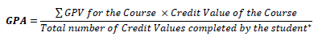

This App is was created on the sole purpose of "Practice", it might change, but not yet. And also I built this app because I think that there was no GPA Calculator that can calculate the GPA cumulatively Hopefuly it might help me or someone following BIT-UCSC.
This Web App was created using only pure HTML, CSS and JavaScript. No Frameworks or Libraries were used during the process. No... not even jQuery!
Enough about the app, lets' take a look at some info that you might need.
Calculation of Grade Point Average
Grade Point Values associated with each grade are as shown in the Table 1. These GPV values are used to compute GPA as using the following formulae:
Grade Point Values (GPV)
The Grade you score has a particular value of Grade Point Value. It is used to calculated during the GPA calculation process. They are as given in Table 1.
| Range of Score | Grade | GPV | Attainment |
| 90 – 100 | A+ | 4.00 [1] | Superior |
| 80 – 89 | A | 4.00 | |
| 75 – 79 | A- | 3.75 | |
| 70 – 74 | B+ | 3.25 | Meritorious |
| 65 – 69 | B | 3.00 | |
| 60 – 64 | B- | 2.75 | |
| 55 – 59 | C+ | 2.25 | Adequate |
| 50 – 54 | C | 2.00 | |
| 45 – 49 | C- | 1.75 | |
| 40 – 44 | D+ | 1.25 | Minimal |
| 30 – 39 | D | 1.00 | |
| 20 – 29 | D- | 0.75 | |
| 00 – 19 | E | 0.00 | Failure |
[1] When calculating classes, A+ will be given a Grade Point Value of 4.25
Award of Honours and Classes
A Student qualifying for the award of a degree general (3 year) by completing all the relevant requirements shall also be qualified for the award of a class as follows.
(a). First Class for obtaining a minimum overall GPA of 3.50
(b). Second Class (Upper Division) – for obtaining a minimum overall GPA of 3.25
(c). Second Class (Lower Division) – for obtaining a minimum overall GPA of 3.00